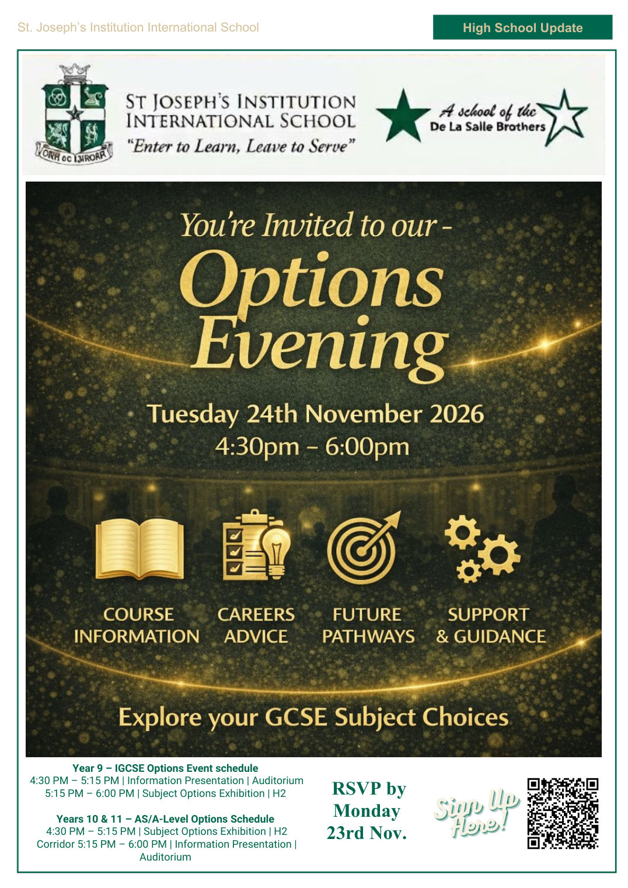
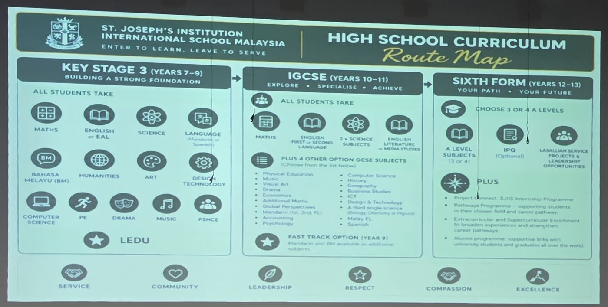
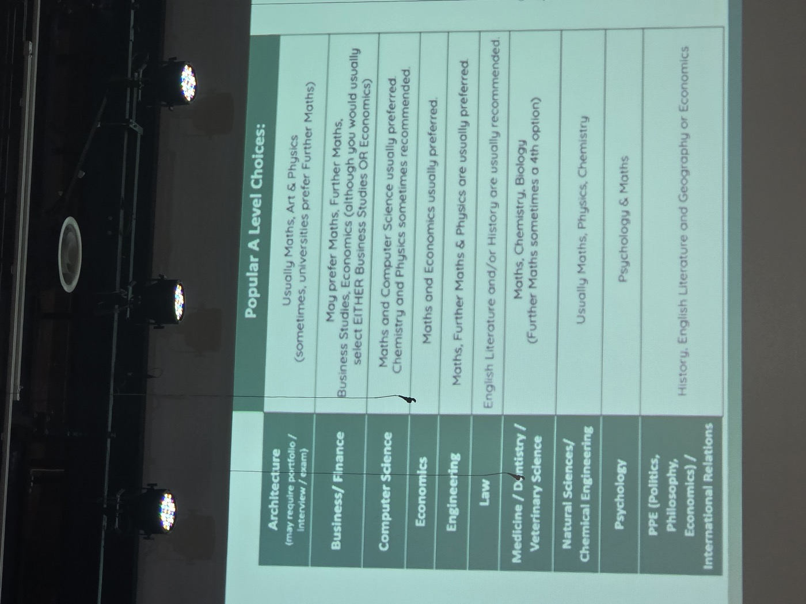

| 날짜 | 할 일 |
|---|---|
| 10/26(월) ~ 11/13(금) | 담임 시간에 IGCSE 과목 설명 영상·팟캐스트 시청 (한 주 2~3과목) · 준비물: 기기에 연결되는 이어폰 |
| 11/24(화) 16:00~18:00 | IGCSE·A레벨 과목 선택 설명회 (학생·학부모) · 올해는 과목을 온라인으로 고른다. 이 설명회가 끝난 뒤 신청 링크가 온다 (핸드북 4쪽) |
| 11/30(월) ~ 12/7(월) | 과목 체험 수업 — 지금 따로 안 배우는 과목 미리 맛보기 |
| 1/4(월) ~ 1/22(금) | 하이스쿨 리더십팀 선생님과 1:1 상담 (과목·관심·강점·진로) |
| 1/25(월) ~ 1/29(금) | 온라인 포털에서 과목 선택 제출 · 로그인 정보는 한 주 전에 받음 · 2027년 1월 29일(금)까지 반드시 골라야 한다 (핸드북 4쪽) |
| 2월 말까지 | 최종 과목 배정 확정, 멘토 선생님이 알려 줌 |
| 구분 | 과목 |
|---|---|
| 수학 | IGCSE 수학 Mathematics (0580) 추가 수학 Additional Mathematics은 9학년 수학에서 꾸준히 B 이상인 학생만, 자유 선택 칸에서 고를 수 있다(초대제). |
| 영어 | 제1언어 영어 English First Language (0500) 또는 제2언어 영어 English Second Language (0511) — 0511은 EAL 반 학생만 |
| A칸 · 영어 | 영문학 English Literature (0475) 또는 미디어학 Media Studies (AQA 8572) 중 하나 제2언어 영어 학생은 영어 English Language (0500/0511)을 10·11학년에 듣고, 준비되면 11학년에 제1언어 영어로 옮길 수 있다. |
| B·C칸 · 과학 | 통합 과학 Coordinated Science (0654), IGCSE 2개 또는 생물 Biology (0610)·물리 Physics (0625)·화학 Chemistry (0620) 중 2개 (각 IGCSE 1개) 둘 다 A레벨 과학으로 이어진다. 3과목 모두는 권하지 않는다 — 과학을 정말 좋아하고 세 과목 모두 꾸준히 잘하면 자유 선택 한 칸을 써서 생물·화학에 물리를 더할 수 있다. |
| 시험 없는 과목 | 인성·웰빙 Character and Wellbeing · 라살 교육 Lasallian Education · 체육 PE · 말레이어 Bahasa Melayu |
A칸에서 한 과목, B·C칸(과학)은 아래 둘 중 하나를 고른다.
| A칸 · 영어 Block A: English block | B·C칸 · 과학 Block B & C: Science blocks | |
|---|---|---|
| 영문학 English Literature (0475) | 통합 과학 Coordinated Science (0654) — B·C 두 칸을 다 쓰고 IGCSE 2개 | |
| 미디어학 Media Studies (AQA 8572) | 생물 Biology (0610) · 물리 Physics (0625) · 화학 Chemistry (0620) 중 2개 — 각 IGCSE 1개 | |
| D칸 | E칸 | F칸 | G칸 |
|---|---|---|---|
| 중국어(모든 수준) Chinese All levels | 미술·디자인 Art & Design | 음악 Music | 드라마 Drama |
| 스페인어(외국어) Spanish Foreign Language | 역사 History | 디자인기술·그래픽 DT & Graphics | 컴퓨터과학 Computer Science |
| 경영 Business Studies | 컴퓨터과학 Computer Science | 지리 Geography | ICT |
| 심리학 Psychology | 체육 PE | 심리학 Psychology | 물리 Physics |
| 추가 수학(초대제) Add. Math (Invite only) | 물리 Physics | 경영 Business Studies | 글로벌 관점 Global Perspectives |
| 추가 수학(초대제) Add. Math (Invite only) | 말레이어(외국어) Bahasa Melayu Foreign Language | 경제 Economics | |
| ASDAN(초대제) ASDAN (Invite only) | 중국어(외국어) Chinese Foreign Language | ||
| 추가 수학(초대제) Add. Math (Invite only) |
| 올린 날 | 글 | 내용 |
|---|---|---|
| 10/13 | 과제: IGCSE 성찰일지 IGCSE Reflection Log | 마감 12/9(수) 오전 11시 · 과목 선택 과정에서 알게 된 것과 생각을 매주 몇 분씩 학교가 준 구글 문서에 적는다. · 이 문서를 담임 선생님과 배정된 고등부 관리자(SLT) 선생님에게 공유한다. · 겨울방학 뒤 그 선생님과 1:1 상담할 때 이 문서를 가져간다. |
| 10/13 | 영어 선택 영상 1.) The Big English Question | A칸에서 영문학과 미디어학 중 하나를 고른다. · 영문학 Cambridge English Literature (0475): 시·소설·희곡을 읽고 분석해 글을 쓴다. 점수는 100% 11학년 말 필기시험(시·소설 50%, 희곡 25%, 처음 보는 글 분석 25%). 읽고 따지고 시험 시간 안에 글을 잘 쓰는 학생에게 맞는다. · 미디어학 AQA Media Studies (8572): 영화·TV·광고·게임·라디오·SNS를 분석한다. 점수는 필기시험 50% + 직접 미디어 작품을 만들고 1,000단어 소감문을 쓰는 과제 50%. 과제 50%는 시험 전에 미리 끝난다. 마감을 잘 지키는 학생에게 맞는다. · 법·의학·인문 쪽은 영문학, 홍보·마케팅·창작 기술 쪽은 미디어학이 도움이 된다. · EAL 학생: 9학년 말에 EAL 과정이면 영문학·미디어학 둘 다 보지 않고, 10학년 말 제2언어 영어 시험 뒤 준비되면 11학년에 제1언어 영어로 올라간다. 클로드 설명서정이는 제1언어 영어(0500)를 고른 학생이라 EAL 안내는 해당되지 않고, A칸에서 영문학이나 미디어학 중 하나를 골라야 한다. |
| 11/3 · 11/4 | 과학 선택 영상 2.) Science Pathways Explained 영어 11/3 · 중국어 11/3 · 한국어 11/4 | 과학은 셋 중 하나를 고른다. Please note translated resources are AI generated and could be inaccurate! Please fact check with a friend after listening to the translated versions of the video. 번역판은 AI가 만든 것이라 틀릴 수 있다. 번역 영상을 들은 뒤 친구와 함께 사실을 확인할 것. ① 통합과학 Coordinated Science (0654): 생물·화학·물리를 함께 배우고 IGCSE 2개(등급 2개, 예: AA·BB)로 인정된다. 덜 깊고 공부량이 적다. ② 분리과학 2개 Separate Sciences: 생물(0610)·화학(0620)·물리(0625) 중 2개를 깊게 배우고 과목마다 등급을 받는다. ③ 분리과학 3개: 셋 다 깊게 배운다. 공부량이 가장 많다. "3개를 한다고 무조건 더 나은 것은 아니다." · A레벨 과학 조건: 통합과학을 하면 A레벨 생물·화학·물리를 들으려면 최소 BB가 꼭 필요하고, AA 이상이 가장 안전하다. BB보다 낮으면 A레벨 과학을 들을 수 없다. · 통합과학 학생은 분리과학에서만 배우는 단원을 여름방학에 혼자 공부해 메워야 한다(선생님이 단원 목록을 준다). · 대학 전공별: 의학·수의학·치의학은 분리과학(셋 다가 가장 좋고 최소 생물·화학). 공학은 물리, 보통 화학도. 약학은 화학 + 과학 하나 더. 법·경영·인문·예술은 통합과학으로 충분하다. · 가족이 같이 물어볼 세 가지: ① 최근 과학 성적이 반에서 꾸준히 위쪽인가 ② 더 많은 공부량(분리과학) 또는 여름방학 보충(통합과학)을 할 마음이 있나 ③ 실제로 생각하는 직업은 무엇인가. 클로드 설명올해 핸드북(4쪽)은 과학 3개를 권하지 않고, 3개를 하려면 자유 선택 칸(D~G) 하나를 써서 물리를 더해야 한다. 그래서 분리과학 3개를 고르면 D~G에서 고를 수 있는 다른 과목이 하나 줄어든다. |
| 11/10 | IGCSE ‘새’ 인문 과목 오디오 3개 IGCSE 'New' Humanities Courses. Global Perspectives, Economics, Business Studies & Psychology | 관심 가는 과목부터 들어 보세요. Take a listen to those that interest you most. ① 글로벌 관점 Cambridge IGCSE Global Perspectives (Cambridge_IGCSE_GP_Course_Breakdown) · 외워서 익히는 공부 rote memorization 대신, 실제 세상의 문제를 직접 조사하는 과목이다. 오늘의 복잡한 세상을 이해하는 데 아주 쓸모가 있다. · 배우는 내용 subject content: 교과서를 삼키는 것이 아니라 생각하는 도구 상자를 만드는 기술 중심 과목 skills-based course이다. 기후변화 climate change, 디지털 세상 the digital world, 이주 migration, 빈곤 poverty 같은 큰 주제 23개를 개인·지역·세계 세 가지 눈 personal, local and global lenses으로 분석한다. · 평가 assessment 세 가지: 1) 필기시험 Component 1, written exam 35% — 1시간 25분 동안 자료 근거 source evidence를 분석한다. 2) 개인 보고서 Component 2, individual report 30% — 1,500~2,000단어 혼자 하는 조사 글 independent research essay. 3) 팀 프로젝트 Component 3, team project 35% — 2~5명이 한 팀으로 지역 문제에 실제로 행동하고, 마지막에 짧은 개인 성찰 글 individual reflective paper을 쓴다. · 맞는 학생 ideal student profile: 늘 “왜?”라고 묻고, 뉴스를 보며 숨은 편견 hidden bias을 찾는 학생. 근거를 따지고, 여러 관점을 토론하고, 함께 실제 해결책을 찾는 것을 좋아하는 호기심 많고 열린 학생에게 맞다. · 얻는 능력과 진로 transferable skills and future pathways: 비판적 평가 critical evaluation와 꼼꼼한 조사 rigorous research 능력을 기른다. A레벨·대학 공부, 그리고 법 law·언론 journalism·외교 diplomacy·비정부기구 NGOs·글로벌 기업 global business 진로를 위한 좋은 준비가 된다. · 결국 글로벌 관점은 호기심 많은 십대를 세상의 큰 문제에 맞설 비판적으로 생각하는 사람 critical thinkers으로 바꾼다. ② 경제 vs 경영 Economics vs Business Studies (Economics_vs_Business_Studies) · 학교 과목 안내 핸드북 SJIS curriculum handbook을 보며 두 과목을 풀어 본다. 둘의 정확한 차이를 아는 것이 앞으로의 공부에 아주 중요하다. · 교육과정과 구성 syllabus and structure: 경제 Economics (0455)는 바다의 큰 날씨 흐름을 공부하는 것이고, 경영 Business Studies (0264)은 실제로 배를 모는 법을 배우는 것이다. · 경제는 크게 보는 눈 macro lens으로 나라 전체의 문제 systemic issues, 정부 정책 government policy, 국제 개발 international development을 본다. 이론 중심이다. 평가 = 객관식 시험 multiple choice paper 30% + 서술형 문제 시험 structured question paper 70%. · 경영은 회사 안으로 들어가 본다. 완전히 실무 중심 operational으로 마케팅 marketing, 인사 HR, 매일의 경영 daily management을 다룬다. 평가 = 단답형 시험 short answer paper 50% + 실제 사례 분석 시험 practical case study 50%. · 경고: 두 과목을 다 듣는 것은 강하게 말린다 strongly discouraged. 기초 개념이 많이 겹쳐서, 둘 다 들으면 앞으로 대학에 보여 줄 수 있는 여러 가지 능력의 폭이 오히려 줄어든다. · 진로 pathway opportunities: 경제는 금융 finance, 공공 정책 public policy, 경제 자문 economic advisory, 법 law, 국제 무역 international trade으로 이어진다. 경영은 실제 경영 관리 business management, 마케팅, 인사 human resources, 창업 entrepreneurship, 운영 operations의 기초가 된다. · 결국 큰 흐름(경제 체계 macro systems)과 회사 안 운영(internal operations) 중 앞으로의 꿈에 맞는 눈을 고르면 된다. ③ 심리학 GCSE Psychology (Is_GCSE_Psychology_Right_for_You) · 마음을 풀어내는 도구 상자다. 일상의 사회 현상과 과학적 탐구 scientific inquiry를 이어, 사람이 왜 그렇게 생각하고 느끼고 행동하는지 설명한다. · 두 단원: 1) 인지와 행동 Unit 1: Cognition and Behaviour — 기억 memory, 지각 perception, 생물심리학 biopsychology, 연구 방법 research methods. 2) 사회적 맥락과 행동 Unit 2: Social Context and Behaviour — 의사소통 communication, 사회적 영향 social influence, 정신 건강 mental health, 그리고 연구 방법 더. · 시험: 2시간 필기시험 2개 Paper 1, Paper 2, 각각 50%·100점. 핵심 지식 core knowledge, 실제 상황에 적용 real-world application, 비판적 평가 critical evaluation를 본다. 사실을 외우는 것보다 사람 행동의 ‘원리’를 읽어 내는 공부다. · 맞는 학생: “저 사람 왜 저랬지?”라고 늘 묻고, 자료로 주장을 증명하기를 좋아하는 학생. 호기심이 많고 뇌에 관심이 있으며, 과학 탐구·자료 분석 data analysis·짜임새 있는 긴 글쓰기 structured extended writing를 즐기면 잘 맞는다. · 얻는 능력과 진로: 사람 행동, 연구 방법론 research methodology, 윤리 ethics, 분석적 사고 analytical thinking를 익힌다. 과학 실험실에서도 회사 회의실에서도 쓸모 있는 만능 칼과 같다. A레벨·대학, 그리고 임상심리 clinical psychology, 신경과학 neuroscience, 상담 counseling, 정신 건강 mental health, 범죄심리 forensic psychology, 인사 HR, 마케팅, 의료 healthcare, 교육 education 진로의 출발점이 된다. · 결국 심리학은 시험 하나 통과하는 것이 아니라, 세상과 사람을 이해하는 오래가는 힘을 얻는 과목이다. 클로드 설명올해 핸드북 선택 칸표(위 3번)에서 글로벌 관점과 경제는 G칸에만, 경영과 심리학은 D칸·F칸에 있다. 경영(D 또는 F)과 경제(G)는 칸이 달라 함께 고를 수는 있지만, 학교가 둘 다 듣는 것을 강하게 말린다. |
| 11/13 | 영어 선택 영상 한국어판·중국어판 1.) The Big English Question — (Korean)The_Big_English_Choice · (Chinese) The Big English Choice | Please note these videos have been auto-translated and may contain inaccuracies. Please fact check any points that are non-negotiables for you. 이 영상들은 자동 번역된 것이라 틀린 곳이 있을 수 있다. 꼭 지켜야 하는 조건은 직접 사실을 확인할 것. ① 한국어판 영상 · 2027년 8월 10학년이 되는 9학년 학생·학부모를 위한 안내. A칸(영어 블록 English block)에서 영문학 English Literature과 미디어학 Media Studies 중 하나를 고른다. 순서는 ① 문학 대 미디어 ② 학습 스타일과 평가 방식 ③ 과제량 나누기 ④ 고등 과정(IB) 연계 ⑤ 대학 전공과 직업. · 핵심 질문: 나는 글을 분석할 것인가, 미디어를 만들 것인가? 영문학은 글의 숨은 뜻과 모호함을 파고들어 긴 글을 쓰는 분석형 에세이 사색가에게, 미디어학은 대중매체의 힘을 탐구하고 디지털 도구로 직접 콘텐츠를 만드는 실용적인 디지털 창작자에게 맞다. · 영문학 Cambridge IGCSE English Literature: 시·소설·희곡을 깊이 읽고, 작가가 어떤 낱말과 문장 구조로 감동을 주는지 파헤쳐 논리적인 글로 쓴다. 평가는 100% 필기시험 — 시·소설 50%, 희곡 25%, 처음 보는 글 분석 unseen text 25%. 시험장에서 집중력을 잘 내는 학생에게 유리하다. · 미디어학 AQA IGCSE Media Studies: 영화·TV·SNS·비디오 게임 같은 오늘의 미디어를 분석하고, 미디어 언어 media language와 대중의 반응 audience 이론을 바탕으로 디지털 도구로 자기 작품을 직접 만든다. 평가는 필기시험 50% + 수행평가 과제 coursework 50%. 성적 절반을 평소 과제로 채워 기말 부담이 줄고, 차근차근 쌓아 가는 성실한 학생에게 맞다. · 과제량 나누기: 학교 과목 선택 핸드북 options handbook의 조언 — 글쓰기·암기가 많은 과목 4개를 한꺼번에 고르지 말고 과제량의 균형을 맞춰라. 역사·심리학·영문학·지리처럼 에세이가 많은 과목을 몰아 듣지 말 것. 역사·지리를 이미 골랐다면 A칸에서 실무형인 미디어학을, 컴퓨터 과학·미술처럼 실기 과목이 많다면 영문학을 넣어 균형을 맞춘다. · 16세 이후(IB 디플로마 IB Diploma): 영문학은 IB 영어 A IB English A로, 미디어학은 IB 영화·미디어 IB Film / Media 과정으로 자연스럽게 이어진다. · 대학 전공과 직업: 영문학은 비판적 사고력·분석력·긴 글 실력을 보여 주어 법학·의학·인문학 전공에 좋다(변호사·학자·의사). 미디어학은 커뮤니케이션·마케팅·창작 미디어 전공에 맞다(글로벌 마케터, 디지털 크리에이터, 방송·PR 전문가). · 가족이 함께 물어볼 질문: 미래의 나는 세상을 날카롭게 꿰뚫어 보는 독자일까, 세상과 새롭게 소통하는 창작자일까? ② 중국어판 영상 · 순서는 네 부분: ① 문학 대 미디어 ② 학습 스타일과 시험 방식 ③ 16세 이후 IB 과정과 대학 전공 ④ 직업. · 영문학은 정답이 없는 모호함을 받아들여야 하는 과목이다. 예: 셰익스피어 Shakespeare 인물의 복잡한 도덕적 동기를 따진다. 책 읽기를 정말 좋아하는 학생이어야 한다. · 미디어학은 미디어가 세상의 분위기를 어떻게 만드는지 배운다. 영화·광고·SNS를 분석하고, 알고리즘이 내 취향을 따라 광고를 내보내는 산업 구조도 배운다. 예: 3분짜리 홍보 영상을 직접 편집해 만든다. · 영문학은 100% 기말 시험 세 장으로 정해지는 ‘100m 달리기’, 미디어학은 시험 50% + 몇 달에 걸친 큰 과제 50%인 ‘마라톤’이라 과제 관리 능력이 필요하다. · 학교의 핵심 조언: 외우기·논문 쓰기가 많은 무거운 과목 4개를 한꺼번에 고르지 말고, 글쓰기 과목 하나에 실기·계산 과목 하나를 짝지어라. A칸 선택이 전체 공부 부담을 맞추는 좋은 기회다. · 법·의학은 긴 논리와 많은 글 속에서 근거를 찾는 힘을, 커뮤니케이션·마케팅은 디지털 이해력·청중 심리·미디어 제작 실력을 본다. 미디어학 쪽 직업 예: 마케팅 전문가, 제작자(PD), 디지털 전략가. |
| 11/13 | 경제 또는 경영 (중국어 오디오) Economics or Business Studies (Simplified Chinese) — 别同时选经济和商业 (경제와 경영을 함께 고르지 마라) | 경제 Economics (0455)와 경영 Business Studies (0264) 중 하나만 골라라. 학교 과목 안내 핸드북 SJIS curriculum handbook을 풀어 설명한다. · 겉보기엔 비슷하다: 둘 다 돈·시장·회사·이윤을 다뤄 많은 학생이 헷갈린다. 하지만 이 선택은 세상이 돌아가는 모습을 보는 ‘기본 운영체제’를 고르는 일이다. 경제는 위에서 도시 전체의 세율·정책을 조절하는 게임(심시티), 경영은 불난 주방에서 30초 안에 음식을 내보내야 하는 게임(오버쿡드)과 같다. · 핸드북의 비유: 경제는 크게 보는 눈 macro lens으로 ‘바다의 큰 날씨 흐름’ — 물가 상승 inflation, 세계 금리 변동, 국제 무역 장벽 — 을 공부한다. 경영은 ‘배를 실제로 모는 법’을 배운다. · 경제가 이론 중심이라는 것은 쓸모없다는 뜻이 아니다. 나라 경제는 실험실에서 실험할 수 없으므로 이론 모델을 세워, 겉으로 시끄러운 현상을 걷어 내고 밑에 있는 원인과 결과를 잡는 높은 수준의 추상적 사고를 훈련한다. · 경영은 폭풍 한가운데 있는 배 위에 떨어뜨린다: 갑판에 구멍(갑작스러운 위기), 선원 파업(인사 HR 위기), 보급품 부족(공급망 supply chain 단절). 마케팅 예산 나누기, 일상 경영의 비효율 같은 실제 운영 operational 문제를 푸는 실행력을 기른다. · 경제는 큰 그림을 생각하기 좋아하는 사람, 경영은 현장에서 지시하며 문제를 해결하는 실천가에게 맞다. 몇 년 동안 공부하면 머리가 정보를 처리하는 기본 길이 서로 달라진다. · 평가 방식이 완전히 다르다: 경제 = 객관식 multiple choice 30% + 서술형 문제 structured questions 70%. 예: “관세를 올리면 국내 제조업의 장기 경쟁력에 어떤 영향을 주는가?”(20점) — ‘경쟁력이 떨어진다’는 결론만으로는 안 되고, 중간의 전달 과정을 블록 쌓듯 한 단계씩 써야 한다. 중앙은행이 금리를 0.5% 올리면 반년 넘게 지나 바다 건너 공장의 실업이 늘어나는 것 같은 긴 인과 관계를 논리로 증명해야 하고, 한 단계라도 빠지면 점수를 잃는다. 경영 = 단답형 short answer 50% + 실제 사례 분석 practical case study 50%. 파산 직전 가족 회사나 비밀을 도둑맞은 신생 회사 같은 상황에서, 적은 정보로 장단점을 따져 손해를 가장 줄이는 결정을 내리는 경영 감각과 위기 대처 능력을 본다. · 핸드북의 강한 경고: 두 과목을 함께 고르는 것은 강하게 말린다 strongly discouraged. 이유는 기초 개념이 많이 겹치기 significant overlap in foundational concepts 때문이다(수요와 공급, 비용과 이윤 계산, 환율 변동 등). 대학 입학 담당자는 학업 능력의 폭과 여러 가지 기술을 보는데, 둘을 함께 들으면 ‘같은 수영장에서 두 번 헤엄친’ 것으로 보여 다양한 능력을 보여 줄 한 칸을 버리게 된다. 예: 경제 + 역사(시장 논리 + 인류 문명의 흐름), 경영 + 프랑스어(바로 파리에 보내 시장을 열 수 있는 관리자). · 고르는 방법 — 끝을 생각하고 시작하라: 각 과목이 이어지는 진로를 보라. 경제 → 금융 finance, 공공 정책 public policy, 경제 자문 economic advisory, 법 law, 국제 무역 international trade (게임 규칙을 만들거나 풀이하는 사람: 정책 입안자, 거시경제 분석가, 변호사). 경영 → 경영 관리 business management, 마케팅 marketing, 인사 human resources, 창업 entrepreneurship, 운영 operations (규칙 안에서 이기는 사람: 창업가, 다국적 회사 임원). · 예: 오래된 가게가 문을 닫는 것을 보면, 경제를 배운 사람은 돈줄을 죄는 정책이 실물 경제를 어떻게 망쳤는지 묻고, 경영을 배운 사람은 그 가게의 공급망이 어디서 끊겼는지, 싸게 사서 마케팅을 바꿔 살릴 수 있는지 따진다. 어느 쪽이 더 높은 것은 없다. 내 성향과 앞으로 맡고 싶은 역할에 따라 고른다. · 마지막 질문: 수업에서는 한 과목만 고르더라도, 겹치는 개념을 이용해 나머지 한쪽의 눈은 수업 밖에서 어떻게 기를 수 있을까? 클로드 설명11/10에 올라온 영어 오디오 ‘Economics vs Business Studies’와 같은 주제를 중국어로 길게 풀어 설명한 것이다. 올해 선택 칸표에서 경영은 D·F칸, 경제는 G칸에 있다. |
| 11/18 | 공지: 성찰일지 쓰기 Post by Victoria Thomas | Dear Year 9 students, Please work on your reflection logs today! You must have a copy ready for your 1-2-1's in January. More Audio files are being shared today but these you can listen too at home if you need to work on your reflection log. 9학년 학생 여러분, 오늘은 성찰일지 reflection log를 쓰세요! 1월 1:1 상담 1-2-1's 때 가져갈 성찰일지 한 부가 꼭 준비돼 있어야 합니다. 오늘 오디오 파일이 더 올라오는데, 성찰일지를 써야 하면 오디오는 집에서 들어도 됩니다. |
| 11/18 | ICT와 컴퓨터 과학은 무엇이 다른가 (오디오 3개) What is the difference between ICT & Computer Science? — 엔진_설계_CS와_베스트_드라이버_ICT · IGCSE_Computer_Science_vs_ICT · CS和ICT怎么选 | Yes you can choose both if you really love all things computer related, but maybe you want to keep your options broader? This explainer helps you understand the main differences between the two courses. Remember translated audio files are AI generated and may contain inaccuracies. Always fact check important information! 컴퓨터에 관한 모든 것을 정말 좋아한다면 둘 다 골라도 된다. 하지만 선택의 폭을 더 넓게 두고 싶지 않은가? 이 설명 자료가 두 과목의 주요 차이를 이해하도록 도와준다. 번역 오디오는 AI가 만든 것이라 틀린 곳이 있을 수 있다. 중요한 정보는 꼭 사실을 확인할 것! ① 영어 오디오 IGCSE_Computer_Science_vs_ICT · 두 과목 중 고르는 것은 결국 하나다. 디지털 세상을 직접 만들고 싶은가, 아니면 그 세상을 다니는 데 쓰는 소프트웨어를 완벽하게 다루고 싶은가? · 배우는 내용 syllabus: 컴퓨터 과학 Computer Science은 속속들이 깊게 들어간다 — 컴퓨팅 사고 computational thinking, 파이썬 프로그래밍 Python programming, 이진법 체계 binary systems, 그리고 AI·로봇 공학 AI and robotics 같은 새 기술까지. ICT는 일상 소프트웨어 활용 everyday software applications에 집중한다 — 문서 작성 document production, 데이터베이스 databases, 스프레드시트 spreadsheets, 웹사이트 만들기 building websites. · 비유: 컴퓨터 과학은 자동차 엔진을 밑바닥부터 설계하는 법을 배우는 것이고, ICT는 최고의 운전자가 되는 법을 배우는 것이다. · 평가 assessment: 컴퓨터 과학은 100% 필기시험 written exams이고, 컴퓨터 시스템 computer systems과 알고리즘 algorithms이 반반이다. 종이와 연필 시험만으로 실제 코딩 실력을 얼마나 잴 수 있는지 생각해 보면 좀 놀랍다. ICT는 필기 이론 시험 written theory paper 40% + 컴퓨터로 보는 실기 시험 practical, computer-based exams 60%로, 실제로 키보드 앞에서 소프트웨어 실력을 증명한다. · 맞는 학생과 진로: 컴퓨터 과학은 분석적이고 논리적으로 문제를 푸는 학생 analytical, logical problem solvers에게 딱 맞고, 소프트웨어 공학 software engineering, AI, 사이버 보안 cybersecurity 진로로 이어진다. ICT는 실용적으로 쓰는 사람 practical users을 위한 과목이고, 웹 개발 web development, IT 관리 IT management, 디지털 미디어 digital media 진로로 이어진다. · 결국 내일의 기술을 논리적으로 설계하고 싶은지, 오늘의 디지털 프로그램을 실용적으로 다루고 싶은지에 달렸다. ② 한국어 오디오 엔진_설계_CS와_베스트_드라이버_ICT · 페라리 열쇠를 받았다고 상상해 보자. 보닛을 열고 엔진이 어떻게 조립됐는지 밑바닥부터 뜯어보고 싶은가, 아니면 운전석에 앉아 트랙을 완벽하게 달리는 최고의 운전자가 되고 싶은가? 커리큘럼 안내와 교육과정 syllabus 자료를 보며 컴퓨터 과학(CS)과 ICT 중 나에게 맞는 쪽을 찾는다. 두 과정은 배우는 내용뿐 아니라 기술을 대하는 태도 자체가 다르게 설계돼 있다. · CS 교실: 파이썬, 이진법, AI, 로봇 공학을 깊게 판다. 컴퓨터가 아무리 복잡한 결정을 내리는 것 같아도 밑바닥은 전기가 켜지고 꺼지는 수많은 스위치의 조합이다. 이 기초 원리를 알아야 기계가 데이터를 어떻게 처리하고 스스로 배우는지 그 깊은 구조를 다룰 수 있다. · ICT 교실: 문서 작성, 데이터베이스, 스프레드시트처럼 화면에 띄워 바로 쓰는 소프트웨어 활용에 집중한다. 실용성이 핵심이라 ‘현대 사회 생존 수업’ 같다. 무인도에서 쓸 칼을 광석부터 직접 녹여 만드는 법을 배우는 것이 CS라면, ICT는 이미 만들어진 스위스 아미 나이프를 들고 정글을 헤쳐 나가는 법 — 수많은 도구를 상황에 맞게 얼마나 빠르고 효율적으로 꺼내 쓰는지 — 를 배운다. · CS 평가 — 100% 종이 시험: 컴퓨터 시스템과 알고리즘을 묻는 필기시험 written exam이다. 컴퓨터 없는 컴퓨터 시험이 시대에 뒤떨어져 보일 수 있지만, 이 시험은 프로그래밍 언어 문법을 얼마나 빨리 치는지 보는 것이 아니다. 키보드로 쳐 보고 실행해 보는 것은 운이나 시행착오에 기대는 것이다. 종이 위에서는 학생이 스스로 컴퓨터가 되어 반복문 loop의 흐름을 직접 따라가고, 데이터가 단계마다 어디로 가는지 머릿속으로 완벽하게 흉내 내야 한다. 오타를 잡는 기술이 아니라 논리의 뼈대를 세우는 능력을 본다. 코드의 논리 구조를 완전히 알아야만 종이 위에서 알고리즘을 설계할 수 있다. · ICT 평가 — 이론 40% + 실기 60%: 직접 키보드를 치며 증명하는 시험이다. 주어진 데이터를 데이터베이스에 넣어 돌려 보거나 웹사이트 구조를 눈에 보이게 만들어 내야 한다. 배운 기술을 바로 행동으로 보여 준다. · 진로: 분석하고 논리적으로 문제를 쪼개는 것을 즐기면 CS — 소프트웨어 엔지니어, AI 개발, 사이버 보안. 복잡한 알고리즘보다 여러 실용 도구를 조합해 눈에 보이는 결과물을 빠르게 만드는 데 흥미가 있으면 ICT — 웹 개발, IT 프로젝트 관리, 디지털 미디어. · 결국 내일의 기술을 논리적으로 설계할 것인가, 오늘의 디지털 프로그램을 실용적으로 관리할 것인가의 문제다. 현대 사회가 돌아가려면 두 역할 모두 꼭 필요하니, 먼저 내 성향을 객관적으로 파악하자. · 마지막 질문: AI가 스스로 코드를 짜고 복잡한 소프트웨어를 알아서 다루는 시대가 코앞이다. 10년 뒤에는 기계의 깊은 원리를 꿰뚫는 엔진 설계자와, 쏟아지는 새 도구를 자유자재로 지휘하는 최고의 운전자 중 누가 더 강한 무기를 쥘까? ③ 중국어 오디오 CS和ICT怎么选 (CS와 ICT 어떻게 고를까) · 어려운 프로그래밍·시스템 설계 시험장에 들어갔는데 키보드를 만질 수 없다고 상상해 보자. 화면도 없고 코드 한 줄도 돌려 볼 수 없이 펜과 종이와 머릿속 논리뿐이다. 이 자료는 헷갈리기 쉬운 IGCSE 두 과목, 컴퓨터 과학(CS)과 정보통신기술(ICT)을 비교한다. 디지털 세상을 직접 짓고 싶은지, 일상 소프트웨어를 완벽하게 다루는 고수가 되고 싶은지 — 규칙을 만드는 쪽과 규칙을 활용하는 쪽의 차이다. · CS 교실: 가장 기초인 ‘나사와 너트’를 연구한다. 예쁜 프로그램 화면은 없고 컴퓨팅 사고, 파이썬 프로그래밍, 0과 1의 이진법 체계에 집중하며 AI·로봇 기술 같은 최신 기술도 다룬다. 편한 사용자 경험을 걷어 내고 디지털 세상의 바닥에서 일하는 것 — 따뜻한 집에 사는 사람이 아니라 지하실에서 배관과 기둥 구조를 연구하는 사람이다. 조건문을 쓸 때 ‘이 글자를 굵게 하라’가 아니라 ‘사용자가 이 버튼을 누르면 데이터베이스에서 데이터를 가져와 비교한 뒤 돌려줘라’라고 컴퓨터에 규칙을 정해 준다. · ICT 교실: 일상 소프트웨어를 끝까지 잘 쓰는 데 집중한다 — 문서 작성, 데이터베이스 관리, 스프레드시트, 웹사이트 만들기. CS가 자동차 엔진을 처음부터 만드는 법이라면 ICT는 최고의 레이서가 되는 법이다. 레이서는 변속기 안 톱니가 어떻게 맞물리는지 몰라도, 코너에서 기어를 내리고 가속해 차 성능을 끝까지 끌어내면 된다. 지금 세상은 문서·데이터베이스·웹사이트 위에 서 있고, 엔진을 만드는 것과 운전하는 것 둘 다 꼭 필요하다. 도구를 잘 다루는 ICT 전문가가 없으면 완벽한 알고리즘도 서버 안에서 헛도는 글자일 뿐이다. · ICT 평가: 최고의 레이서를 시험할 때는 교통 법규 시험지만 주지 않고 트랙에 올린다. 이론 필기 40% + 컴퓨터 실기 시험 60%. 시간 압박 속에서 컴퓨터 앞에 앉아 손과 눈의 협응과 빠른 조작을 시험관에게 보여 줘야 한다. · CS 평가: 디지털 시스템을 만들고 프로그래밍 언어를 배우는 과목인데 100% 필기시험이다. 키보드를 못 만지게 한다는 것은 코딩 손기술이나 타자 속도를 보는 것이 아니라, 코드가 머릿속에서 제대로 돌아가는지를 본다는 뜻이다. 순수하게 논리 추론과 알고리즘 사고를 보며, 시험지는 컴퓨터 시스템과 알고리즘이 반반이다. 키보드와 모니터는 상관없는 장치이고, 내 머리가 프로그램을 돌리는 CPU다. 이것이 CS의 핵심인 컴퓨팅 사고다. 시험지에 열 몇 줄짜리 복잡한 반복 코드가 나오면 컴퓨터 없이 종이 위에서 한 단계씩 따라가며 변수 하나하나의 상태를 머릿속에 기억해야 한다. 도구와 프로그래밍 언어는 시대에 따라 사라지지만, 혼란 속에서 질서를 세우는 논리 추론 능력은 오래간다. · 맞는 학생과 진로: CS에 꼭 맞는 학생은 ‘문제 해결자’ — 분석력과 빈틈없는 논리가 강하다. 진로는 소프트웨어 공학, 인공지능, 사이버 보안. ICT에 꼭 맞는 학생은 ‘실용을 중시하는 사용자’ — 새 디지털 벽돌을 발명하지 않고, 있는 재료로 사람에게 가장 편한 디지털 공간을 짓는다. 진로는 웹 개발, IT 관리, 디지털 미디어. · 왜 웹 개발이 CS가 아니라 ICT에 있나: ICT의 웹사이트 만들기는 주로 HTML과 CSS — 마크업 언어 markup language와 스타일시트 style sheet — 를 쓴다. HTML을 쓰는 것은 사진을 왼쪽에 두고 글자를 빨갛게 키우는 것처럼 보이는 모양과 내용을 배치하는 일이지, 복잡한 알고리즘을 설계하는 일이 아니다. 파이썬이 컴퓨터에 생각하는 뇌를 달아 주는 것이라면, HTML은 컴퓨터에 어울리는 옷을 골라 주는 것이다. 웹 개발은 정해진 공간에서 보기 좋은 경험을 찾는 실내 디자이너에 가깝다. CS의 소프트웨어 공학은 그 웹페이지를 돌리는 바닥 논리 — 수십만 명이 동시에 ‘구매’를 눌러도 무너지지 않게 처리하는 방법, 돈이 안전하도록 데이터 전송을 암호화하는 방법 — 를 다룬다. CS는 건물 전체의 기둥을 설계한다. · ICT는 지금을 완벽하게 보여 주고 활용하는 것, CS는 미래를 설계하고 받치는 것이다. 스스로 물을 질문은 하나 — 논리로 내일의 기술을 설계하고 만들고 싶은가, 실천으로 오늘의 디지털 도구를 관리하고 활용하고 싶은가? 정답은 없고 둘 다 끝없는 가능성으로 이어진다. · 마지막 생각 실험: 지금 CS의 핵심 능력인 알고리즘 사고는 100% 종이 시험으로 잰다. 그런데 머지않아 AI에 쉬운 말 몇 마디만 넣으면 바닥 코드를 다 써 주는 때가 오면, AI를 완벽하게 다루고 활용하는 ICT식 최고의 운전자가 종이 위에서 엔진을 설계하는 사람보다 더 값어치 있게 될까? 규칙을 만드는 사람이 언제나 이길까, 쓰임새를 가장 잘 아는 노련한 운전자가 마지막에 웃을까? 클로드 설명올해 선택 칸표(위 3번)에서 컴퓨터과학은 E칸과 G칸에, ICT는 G칸에만 있다. 둘 다 고르려면 컴퓨터과학을 E칸에서 고르고 ICT를 G칸에서 골라야 하고, 그러면 E칸의 역사·체육·물리 등과 G칸의 드라마·글로벌 관점·경제 등은 고를 수 없다. |
| 11/20 | 공지: 과목 선택 설명회 마지막 신청 안내 Last call to sign up to options evening! Click Here to RSVP by Monday 23rd (2).pdf | Last call to sign up to options evening! All students should be signed up to this event! Even if your parents can't make it at least come along to the exhibition, there you will see real examples of the text books and coursework expected for each subject at IGCSE level. 과목 선택 설명회 options evening 신청 마지막 안내! 모든 학생이 이 행사에 신청해야 합니다! 부모님이 못 오시더라도 적어도 전시회 exhibition에는 꼭 오세요. 거기서 IGCSE 과목마다 쓰는 실제 교과서 text books와 해야 하는 수행평가 과제 coursework의 실제 예시를 볼 수 있습니다. 첨부 안내지 Click Here to RSVP by Monday 23rd  · 맨 위: 세인트조셉 국제학교 St Joseph's Institution International School · 고등부 소식 High School Update · “배우러 들어와 섬기러 나가라” Enter to Learn, Leave to Serve · 라살 형제회 학교 A school of the De La Salle Brothers · 과목 선택 설명회에 초대합니다 You're Invited to our Options Evening · 2026년 11월 24일(화) 오후 4:30 ~ 6:00 Tuesday 24th November 2026, 4:30pm – 6:00pm · 과목 안내 Course Information · 진로 조언 Careers Advice · 앞으로의 진학 길 Future Pathways · 지원과 안내 Support & Guidance · GCSE 과목 선택을 알아보세요 Explore your GCSE Subject Choices · 9학년 — IGCSE 과목 선택 행사 일정 Year 9 – IGCSE Options Event schedule 오후 4:30 ~ 5:15 | 안내 발표 Information Presentation | 강당 Auditorium 오후 5:15 ~ 6:00 | 과목 전시회 Subject Options Exhibition | H2 · 10·11학년 — AS/A레벨 과목 선택 일정 Years 10 & 11 – AS/A-Level Options Schedule 오후 4:30 ~ 5:15 | 과목 전시회 Subject Options Exhibition | H2 복도 Corridor 오후 5:15 ~ 6:00 | 안내 발표 Information Presentation | 강당 Auditorium · 11월 23일(월)까지 참석 회신 RSVP by Monday 23rd Nov. · 여기서 신청하세요! Sign Up Here! (QR 코드) QR 코드 신청서 Options evening 24th November 2026 · 과목 선택 설명회 11월 24일(화) 16:30~18:00 Options Evening Tuesday 16:30-18:00 · * 표시는 꼭 답해야 하는 질문 Indicates required question · 이메일 * Email — 학교 이메일을 응답에 함께 기록 · 함께 오는 학생 이름을 적어 주세요 * Please add the name of student(s) you are accompanying to the event. · 어느 발표에 참석합니까? * Which Presentation will you be attending? — IGCSE(9학년) IGCSE (Year 9) / AS·A레벨(10·11학년) AS/A Level (Year 10 & 11) · 발표에 몇 명이 옵니까? (학생 포함) * How many people will attend the presentation? (Please Include the student/s attending) — 1 ~ 6명 중 고름 · 응답 사본이 학교 이메일로 보내진다. A copy of your responses will be emailed. 클로드 설명위 1번 일정표의 11/24 설명회는 핸드북에 16:00~18:00으로 적혀 있지만, 이 안내지와 신청서에는 16:30~18:00으로 적혀 있다. 9학년은 16:30 강당 발표 → 17:15 H2 전시회 순서다. 신청 마감은 11/23(월)이고, 신청서에서 'IGCSE (Year 9)'를 고르고 학생을 포함한 인원수를 적는다. |

| 단계 | 영어 | 한국어 | 설명 |
|---|---|---|---|
| 키 스테이지 3 (7~9학년) 튼튼한 기초 쌓기 KEY STAGE 3 (YEARS 7–9) Building a strong foundation | All students take: Maths, English or EAL, Science, Language (Mandarin or Spanish), Bahasa Melayu (BM), Humanities, Art, Design Technology, Computer Science, PE, Drama, Music, PSHCE, LEDU | 모든 학생이 듣는 과목: 수학, 영어 또는 EAL, 과학, 언어(중국어 또는 스페인어), 말레이어, 휴머니티(인문), 미술, 디자인 기술, 컴퓨터 과학, 체육, 연극, 음악, 인성·웰빙(PSHCE), 라살 교육(LEDU) | 서정이가 지금 있는 단계다(9학년). |
| IGCSE (10~11학년) 탐색 · 전문화 · 성취 IGCSE (YEARS 10–11) Explore • Specialise • Achieve | All students take: Maths, English First or Second Language, 2 × Science subjects, English Literature or Media Studies. Plus 4 other option GCSE subjects (choose from the list below): Physical Education, Music, Visual Art, Drama, Economics, Additional Maths, Global Perspectives, Mandarin (1st, 2nd, FL), Accounting, Psychology, Computer Science, History, Geography, Business Studies, ICT, Design & Technology, A third single science (Biology, Chemistry or Physics), Malay FL, Spanish. Fast track option (Year 9): Mandarin and BM available as additional subjects. | 모든 학생이 듣는 과목: 수학, 영어(제1언어 또는 제2언어), 과학 2과목, 영문학 또는 미디어학. 여기에 선택 과목 4개를 더 고른다(아래 목록에서): 체육, 음악, 미술, 연극, 경제학, 추가 수학, 글로벌 관점, 중국어(제1언어·제2언어·외국어), 회계, 심리학, 컴퓨터 과학, 역사, 지리, 경영학, ICT, 디자인·기술, 세 번째 개별 과학(생물·화학·물리 중), 말레이어(외국어), 스페인어. 속성 과정(9학년): 중국어와 말레이어를 추가 과목으로 들을 수 있다. | 2027년 1월 29일까지 고르는 것이 이 단계다. 선택 4개는 이 쪽 3번 표의 D·E·F·G칸에서 하나씩 고르는 것과 같다. 발표 화면에는 회계(Accounting)가 있는데 핸드북 칸 표(5쪽)에는 없다. 회계를 생각하면 선생님께 확인해야 한다. |
| 식스폼 (12~13학년) 나의 길 · 나의 미래 SIXTH FORM (YEARS 12–13) Your path • Your future | Choose 3 or 4 A Levels: A Level subjects (3 or 4), IPQ (Optional), Lasallian Service Projects & Leadership Opportunities. Plus: Project Connect: SJIIS Internship Programme · Pathways Programme – supporting students in their chosen field and career pathway · Extracurricular and Supercurricular Enrichment to broaden experiences and strengthen career pathways · Alumni programme: supportive links with university students and graduates all over the world. | A레벨 3~4과목을 고른다: A레벨 과목(3 또는 4개), IPQ(개인 연구 과제, 선택), 라살 봉사 프로젝트와 리더십 기회. 그 밖에: 프로젝트 커넥트(학교 인턴십 프로그램) · 진로 프로그램(고른 분야와 진로를 돕는다) · 교과 밖 활동과 심화 활동(경험을 넓히고 진로를 다진다) · 졸업생 프로그램(전 세계 대학생·졸업생과 연결). | IGCSE 다음 단계다. 대학은 이 A레벨 성적을 더 무겁게 본다(핸드북 5쪽). 아래 표가 전공별로 많이 고르는 A레벨 과목이다. |
| 학교 가치 | Service · Community · Leadership · Respect · Compassion · Excellence | 봉사 · 공동체 · 리더십 · 존중 · 연민 · 탁월함 | 화면 맨 아래 줄이다. |

| 대학 전공 | 영어 | 한국어 | 설명 |
|---|---|---|---|
| 건축 (포트폴리오·면접·시험을 요구할 수 있음) Architecture (may require portfolio / interview / exam) | Usually Maths, Art & Physics (sometimes, universities prefer Further Maths) | 보통 수학, 미술, 물리 (대학에 따라 심화 수학을 더 좋아함) | IGCSE에서 수학은 모두 듣는다. 미술은 E칸, 물리는 과학(B·C칸)에서 고른다. 심화 수학으로 가려면 추가 수학(초대받은 학생만)이 도움이 된다. |
| 경영·금융 Business / Finance | May prefer Maths, Further Maths, Business Studies, Economics (although you would usually select EITHER Business Studies OR Economics) | 수학, 심화 수학, 경영학, 경제학을 좋아할 수 있음 (단 경영학과 경제학 중 하나만 고르는 것이 보통) | IGCSE 경영학은 D·F칸, 경제학은 G칸이다. 핸드북도 둘을 같이 듣지 말라고 한다(5쪽). |
| 컴퓨터 과학 Computer Science | Maths and Computer Science usually preferred. Chemistry and Physics sometimes recommended. | 수학과 컴퓨터 과학을 보통 선호. 화학과 물리를 권할 때도 있음. | IGCSE 컴퓨터 과학은 E칸 또는 G칸이다. ICT(G칸)와는 다른 과목이다. |
| 경제학 Economics | Maths and Economics usually preferred. | 수학과 경제학을 보통 선호. | IGCSE 경제학은 G칸이다. |
| 공학 Engineering | Maths, Further Maths & Physics are usually preferred. | 수학, 심화 수학, 물리를 보통 선호. | 물리는 과학(B·C칸)에서 듣는다. 심화 수학으로 가려면 추가 수학(초대받은 학생만)이 도움이 된다. |
| 법학 Law | English Literature and/or History are usually recommended. | 영문학 그리고/또는 역사를 보통 권함. | 영문학은 A칸(영문학·미디어학 중 하나), 역사는 E칸이다. |
| 의학·치의학·수의학 Medicine / Dentistry / Veterinary Science | Maths, Chemistry, Biology (Further Maths sometimes a 4th option) | 수학, 화학, 생물 (심화 수학을 네 번째 과목으로 하기도 함) | 과학(B·C칸)에서 통합과학이나 생물·화학을 듣는다. |
| 자연과학·화학공학 Natural Sciences / Chemical Engineering | Usually Maths, Physics, Chemistry | 보통 수학, 물리, 화학 | 과학(B·C칸)에서 물리·화학을 듣는다. |
| 심리학 Psychology | Psychology & Maths | 심리학과 수학 | IGCSE 심리학은 D칸 또는 F칸이다. |
| 정치·철학·경제(PPE)·국제관계 PPE (Politics, Philosophy, Economics) / International Relations | History, English Literature and Geography or Economics | 역사, 영문학, 그리고 지리 또는 경제학 | IGCSE에서 역사는 E칸, 영문학은 A칸, 지리는 F칸, 경제학은 G칸이라 다 같이 고를 수 있다. |